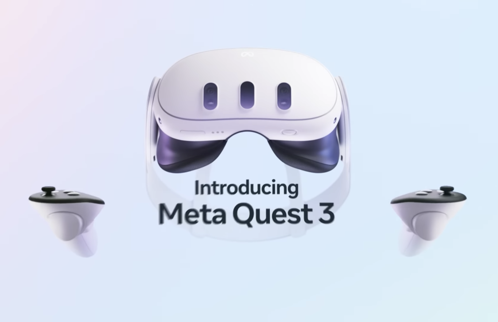
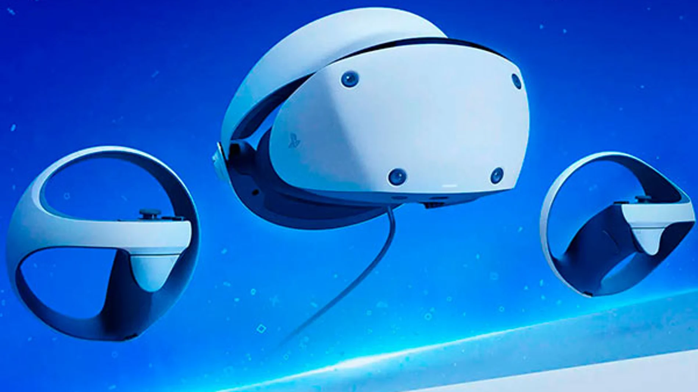

Definición
Las gafas de realidad virtual, también conocidas como lentes VR, son dispositivos de visualización de entornos virtuales en tres dimensiones. Permiten reproducir imágenes creadas por computadora en una pantalla ubicada muy cerca de los ojos. O, incluso, proyectar la imagen directamente sobre la retina de los mismos. Una característica interesante de los lentes VR es que el movimiento de la cabeza modifica las imágenes que aparecen en la pantalla. Además, proporcionan un campo de visión similar al campo de visión natural del ser humano. Todo ello contribuye a generar la sensación de inmersión, es decir, la sensación de estar dentro de la escena. Ten en cuenta que no solo se basa en ponerte unos lentes, la tecnología es capaz de lograr que tu cerebro piense que estás dentro del entorno virtual y que tu cuerpo reaccione como si realmente estuvieras ahí. ¡Es increíble!
Tipos de gafas de realidad virtual:
-Lentes de realidad virtual independientes:
Este tipo de lentes de VR pueden ser usados sin necesidad de estar conectados a ningún dispositivo externo; es decir, son inalámbricos. Pero entonces, ¿cómo funcionan los lentes de realidad virtual independientes? Las mismas gafas son las que soportan todo el peso gráfico y las aplicaciones se descargan directamente al dispositivo. En su mayoría, los gráficos suelen ser de una calidad baja, aunque tiene un precio más accesible.
-Lentes de realidad virtual conectados:
Por otro lado, existen las gafas de VR que necesitan estar conectadas sí o sí a un dispositivo para poder funcionar. Ya sea una PC, una consola de videojuegos o, incluso, tu celular, siempre será necesario que estos lentes de realidad virtual se encuentren conectados. Esto va a permitir que el artefacto soporte los elevados requisitos gráficos, por lo cual también tienen un costo mayor
Ventajas
Inmersión Total: Las gafas de VR proporcionan una experiencia innmersiva que puede hacer que los usuarios se sientan como si realmente estuvieran en un entorno diferente, lo cual es difícil de de lograr con otros medios.
Capacitación y Educación: Las VR pueden ser utilizadas para entrenar a personas en escenarios que serían costosos, peligrosos o impracticables en la vida real.
Terapia o Rehabilitación: Las VR se han utilizado en terapias para tratar afecciones como el trastorno de estrés postraumático (TEPT) o rehabilitación física al hacer que los ejercicios sean más atractivos.
Desventajas
Mareos y Desorientación: Es común que algunos usuarios experimentan síntomas como mareos, náuseas o desorientación al usar VR, especialmente durante periodos prolongados
Costo elevado: El hardware de alta calidad para VR puede ser costoso, lo que limita su accesibilidad para los usuarios
Salud y Seguridad: Hay preocupaciones sobre los efectos a largo plazo del uso de las VR en la salud mental, y visual.
Meta Quest 3
Las Meta Quest 3 son unas gafas vr de realidad mixta, pero a diferencia de las futuras Vision Pro de Apple, se lanza a un precio mucho mas accesible. Este dispositivo ofrece notables mejoras en comparación con su predecesor, las Quest 2, incluyendo gráficos superiores, una pantalla con más resolución, mandos mejorados y su nueva función de realidad mixta. La pregunta clave es si merece la pena esta actualización, especialmente considerando su precio que es 200€ más elevado que las Quest 2
Dispositivos semejantes

Sony Playstation VR2